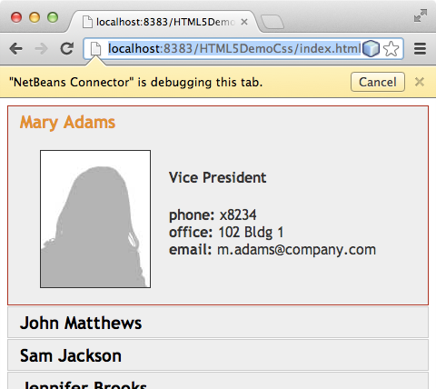
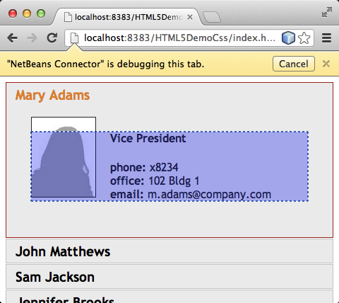
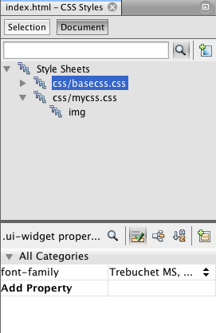
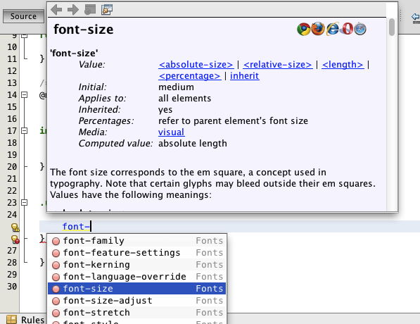
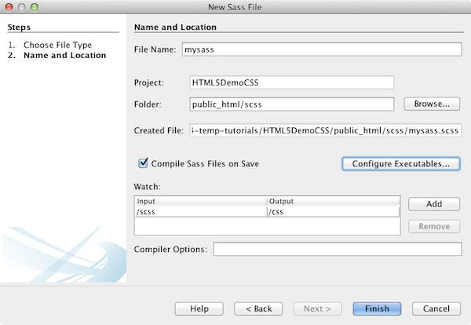

Apache NetBeans
Apache NetBeansLatest release
HTML5アプリケーションでのCSSスタイル・シートの操作
| This tutorial needs a review. You can open a JIRA issue, or edit it in GitHub following these contribution guidelines. |
HTML5アプリケーションは、通常はHTML、CSSおよびJavaScriptを結合して、ブラウザで稼働し、スマートフォン、タブレット、ラップトップなどの各種デバイスに表示されるアプリケーションを作成します。このドキュメントでは、CSSルールを操作してアプリケーションのレイアウトを変更するのに役立つツールをIDEが提供する方法を示します。IDEでは、アプリケーションでのSassおよびLESS CSSプリプロセッサの作成および使用もサポートされます。
ChromeブラウザのNetBeans Connector拡張機能は、各種デバイスに表示されるアプリケーションの表示に役立ちます。拡張機能により、ChromeブラウザとIDEは相互に通信できます。「NetBeansでの検査」モードでは、ブラウザで選択することによりソース・コード内の要素を特定できます。ブラウザで要素を選択した後で、IDEを使用して、その要素に適用されるCSSルールおよびプロパティを表示できます。
Chromeブラウザ用のNetBeans Connector拡張機能のインストール方法の詳細は、チュートリアルHTML5アプリケーションの開始を参照してください。
このチュートリアルのスクリーンショットを確認するには、HTML5アプリケーションでのCSSスタイル・シートの操作のビデオを参照してください。
このチュートリアルを完了するには、次のリソースが必要です。
| ソフトウェアまたはリソース | 必須バージョン |
|---|---|
7.4, 8.0 |
|
7または8 |
|
— |
|
1.1以降 |
|
— |
|
CSSプリプロセッサ |
*注意: *
-
HTML5DemoSiteTemplate.zipは、プロジェクトの作成時に使用するサイト・テンプレートです。
-
プロジェクトを動作中のソリューションと比較する場合は、完成したプロジェクトのサイト・テンプレートをダウンロードできます。
-
このドキュメントは、HTML、CSSおよびJavaScriptについて基本的な知識またはプログラミング経験を持つ読者を想定して書かれています。
HTML5アプリケーションの作成
このチュートリアルでは、サイト・テンプレートを使用してHTML5プロジェクトを作成します。このチュートリアルで使用するサイト・テンプレートは、HTML5アプリケーションの開始チュートリアルでサイト・テンプレートとして保存したのと同じテンプレートです。開始チュートリアルの手順を実行した場合は、最後の項で保存したサイト・テンプレートを使用できます。または、HTML5DemoSiteTemplate.zipサイト・テンプレートをダウンロードできます。
次の手順を実行して、サイト・テンプレートからアプリケーションを作成します。
-
HTML5サイト・テンプレート(HTML5DemoSiteTemplate)をダウンロードします。
-
メイン・メニューで「ファイル」→「新規プロジェクト」([Ctrl]-[Shift]-[N]、Macの場合は[⌘]-[Shift]-[N])を選択して新規プロジェクト・ウィザードを開きます。
-
HTML5*カテゴリを選択し、「HTML5アプリケーション」*を選択します。「次」をクリックします。
-
プロジェクト名として*「HTML5DemoCss」*と入力し、場所を指定します。「次」をクリックします。
-
*「テンプレートを選択」*オプションを選択し、「参照」をクリックしてサイト・テンプレート(
HTML5DemoSiteTemplate.zip)を特定します。「終了」をクリックします。

Figure 1. 新規HTML5アプリケーション・ウィザードでサイト・テンプレートを指定
「終了」をクリックすると、IDEによりプロジェクトが作成され、エディタに index.html ファイルが開かれます。「プロジェクト」ウィンドウで、プロジェクトに index.html 、CSSスタイル・シート、いくつかのJavaScriptライブラリおよびいくつかのイメージが含まれていることを確認できます。CSSルールおよび「ナビゲータ」ウィンドウもIDEに開きます。
異なるデバイスでのアプリケーションの表示
このチュートリアルでは、NetBeans Connector機能拡張がインストールされたChromeブラウザでアプリケーションを実行します。拡張機能がインストールされている場合は、ブラウザのNetBeansメニューを使用してブラウザ・ウィンドウを簡単にサイズ変更し、いくつかの一般的なデバイスで表示される際のアプリケーションを表示できます。
*注意:*このチュートリアルでは、Chromeブラウザを使用し、Chrome用のNetBeans拡張機能をインストールすることをお薦めします。NetBeans Connector拡張機能のインストール方法の詳細は、チュートリアルHTML5アプリケーションの開始を参照してください。
次の手順を実行して、Chromeブラウザでアプリケーションを実行します。
-
NetBeans統合のあるChromeがツールバーのドロップダウン・リストで選択されていることを確認します。
-
ツールバーの「実行」ボタンをクリックして、Chromeブラウザでプロジェクトを実行します。
ブラウザで、単純な展開可能メニューを表示できます。
NetBeans Connectorがタブをデバッグしていることを示す黄色いバーがブラウザ・タブに表示されます。黄色いバーが表示されているときは、IDEとブラウザが接続され、相互に通信できます。IDEからHTML5アプリケーションを起動すると、JavaScriptデバッガが自動的に有効になります。ファイルに変更を保存するかCSSスタイル・シートに変更を加えた場合は、ブラウザ・ウィンドウが自動的に更新されて変更が表示されるため、ページを再ロードする必要はありません。
黄色いバーを閉じるか「取消」をクリックした場合は、IDEとブラウザ間の接続が切断されます。接続を切断した場合は、IDEからHTML5アプリケーションを起動する必要があります。
また、NetBeansアイコンがブラウザのURLの場所フィールドに表示されます。アイコンをクリックして、ブラウザの表示サイズの変更および「NetBeansでの検査」モードの有効化を行う各種オプションを提供するメニューを開くことができます。
-
ブラウザの「URL」フィールドで「NetBeansアクションを開く」アイコンをクリックしてNetBeansメニューを開き、メニューで「タブレット縦」を選択します。
ウィンドウが縦モードのタブレット・ブラウザのサイズに変更されます。メニューが右側に合せて伸張し、メニュー全体が表示されます。

Figure 2. ブラウザの「タブレット縦」表示サイズ
メニューでデフォルト・デバイスの1つを選択した場合、ブラウザ・ウィンドウがデバイスのサイズに変更されます。これにより、アプリケーションが選択したデバイスでどのように表示されるかを確認できます。HTML5アプリケーションは、通常、表示されるデバイスの画面サイズに対応するように設計されています。画面サイズに対応するJavaScriptおよびCSSルールを使用し、レイアウトがデバイスに対して最適化されるようにアプリケーションの表示方法を変更できます。
-
もう一度NetBeansアイコンをクリックし、「NetBeans」メニューで「スマートフォン横」を選択します。

Figure 3. ブラウザのNetBeansメニューで「スマートフォン横」を選択
ウィンドウが横方向のスマートフォンのサイズに変更され、スクロールしないとメニューの下部が表示されないことを確認できます。

Figure 4. 「スマートフォン横」にサイズ変更されたブラウザ・ウィンドウ
次の項では、横表示のスマートフォンでスクロールしなくてもメニュー全体を表示できるようにスタイル・シートを変更します。
レイアウトの変更
スクロールが不要になるように、ページの要素にいくつかの小さな変更を加えることができます。これらの変更は、ブラウザのサイズがスマートフォンのサイズ以下の場合にのみ適用する必要があります。横方向に表示されている場合、スマートフォンのブラウザ・ウィンドウは幅480ピクセル、高さ320ピクセルです。
メディア・スタイル・シートの作成
この課題では、新規スタイル・シートを作成し、スマートフォン画面を持つデバイスのメディア・ルールを追加します。次に、いくつかのCSSルールをメディア・ルールに追加します。
-
「プロジェクト」ウィンドウの「
css」フォルダ・ノードを右クリックし、ポップアップ・メニューで「新規」→「Cascading Style Sheet」を選択します。 -
「ファイル名」として「mycss」と入力します。「終了」をクリックします。
「終了」をクリックすると、新規スタイル・シートがエディタに開きます。
-
スタイル・シートに次のメディア・ルールを追加します。
/*My rule for smartphone*/
@media (max-width: 480px) {
}このルールの中括弧の間に追加するCSSルールは、ブラウザのサイズが幅480ピクセル以下の場合にのみ適用されます。
頻繁に使用する可能性のあるコード・スニペットのコード・テンプレートを作成します。「オプション」ウィンドウの「エディタ」カテゴリの「コード・テンプレート」タブで、CSSコード・テンプレートを作成できます。
-
変更を保存します。
-
エディタで
index.htmlを開きます。
-
スタイル・シートの
index.htmlの<head>タグの間に次のリンクを追加します。変更を保存します。
<link type="text/css" rel="stylesheet" href="css/mycss.css">エディタでコード補完を使用して、スタイル・シートへのリンクを追加できます。
CSSルールの追加
-
Chromeブラウザで、NetBeansアイコンをクリックし、メニューでNetBeansでの検査モードを選択します。
-
ブラウザでイメージをクリックします。
「検査」モードで選択されている場合に要素がハイライト表示されます。このスクリーンショットで、イメージが青でハイライト表示されていることを確認できます。

Figure 5. Chromeブラウザで選択されているイメージ
IDEで、 img に適用されているCSSルールおよびプロパティが「CSSスタイル」ウィンドウにリストされていることを確認できます。「CSSスタイル」ウィンドウの「選択」タブには、選択した要素の詳細を示す3つのペインがあります。

Figure 6. イメージが選択されているときの「CSSスタイル」ウィンドウ
上部ペイン
ウィンドウの上部の「プロパティ」ペインでは、6つのプロパティと値のペアが img 要素に適用されていることを確認できます。3つのペア( border 、 float および margin )は、 img 要素のCSSルールを介して適用されます。 img 要素は、 img 要素を含むオブジェクトに適用されるクラス・セレクタのプロパティを継承するため、残りの3つのペアが適用されます。「ナビゲータ」ウィンドウでDOMの構造を明確に確認できます。現在、「CSSスタイル」ウィンドウの「プロパティ」ペインでは border プロパティが選択されています。
中央ペイン
中央の適用されたスタイル・ペインでは、 border プロパティおよび値が img 要素を定義するCSSルールで指定されていることを確認できます。ルールは、 basecss.css ファイルの行12にあります。ペインで場所をクリックして、エディタにスタイル・シートを開くことができます。
下部ペイン
下部ペインには、中央ペインで選択したルールのCSSルールで定義されているすべてのプロパティが表示されます。この場合、 img のルールが border 、 float 、 margin-right の各プロパティを定義していることを確認できます。
-
「CSSスタイル」ウィンドウで「ドキュメント」タブをクリックします。
-
「
css/mycss.css」ノードを選択し、「CSSルールの編集」ボタン( )をクリックして、「CSSルールの編集」ダイアログ・ボックスを開きます。
)をクリックして、「CSSルールの編集」ダイアログ・ボックスを開きます。

Figure 7. 「CSSルールの編集」ダイアログ・ボックス。
-
「セレクタ・タイプ」として「要素」を選択し、「セレクタ」として「img」を入力します。
-
「スタイルシート」として「
css/mycss.css」を選択し、「@規則」として*(最大幅:480px)*を選択します。「OK」をクリックします。

Figure 8. 「CSSルールの編集」ダイアログ・ボックス。
「OK」をクリックすると、IDEにより css/mycss.css スタイル・シートのメディア・ルールの中括弧内に img のCSSルールが作成されます。新しいルールが適用されたスタイル・ペインにリストされます。
-
「CSSスタイル」ウィンドウで「選択」タブをクリックします。
``img`` に2つのCSSルールがあることがわかります。一方のルールは ``mycss.css`` にあり、もう一方は ``basecss.css`` にあります。
-
「CSSスタイル」ウィンドウの適用されたスタイル・ペインで新しい
imgルール(mycss.cssで定義)を選択します。
Figure 9. 「CSSスタイル」ウィンドウの選択した要素のスタイル
ウィンドウの下部ペインで、ルールにプロパティがないことを確認できます。
-
「CSSスタイル」ウィンドウの下部ペインの左側の列で「プロパティの追加」をクリックして、*「width」*と入力します。
-
「
width」プロパティの右側の列に*「90px」*と入力し、キーボードのリターン・キーを押します。

Figure 10. 「CSSスタイル」ウィンドウのイメージ・プロパティ・ペイン
値列への入力を始めると、ドロップダウン・リストに「 width 」プロパティの一般的な値が表示されるのを確認できます。
リターン・キーを押すと、ブラウザのイメージが自動的に90ピクセル幅にサイズ変更されます。IDEは、 mycss.css スタイル・シートのCSSルールにプロパティを追加しました。エディタで、スタイル・シートに次のルールが含まれています。
/*My rule for smartphone*/
@media (max-width: 480px) {
img {
width: 90px;
}
}メニューはまだウィンドウ内に収まらないため、いくつかの変更をスタイル・シートに追加で行う必要があります。
-
ブラウザ・ウィンドウで、順序なしリスト(
<ul>)要素を選択します。

Figure 11. ブラウザで選択したリスト要素
要素を選択すると、「ブラウザDOM」ウィンドウで「 <ul> 」が選択され、「CSSスタイル」ウィンドウでその要素に適用されているスタイルを確認できます。

Figure 12. 「ブラウザDOM」ウィンドウで選択したリスト要素
「CSSスタイル」ウィンドウで「 font-family 」を選択すると、 font-family プロパティと値が .ui-widget クラス・セレクタで定義されていることを確認できます。
-
エディタで
index.htmlファイルをクリックし、「CSSスタイル」ウィンドウの「ドキュメント」タブをクリックします。
-
「CSSスタイル」ウィンドウで「
css/mycss.css」ノードを展開します。

Figure 13. 「CSSスタイル」ウィンドウの「ドキュメント」タブで選択されたスタイル・シート
-
「CSSスタイル」ウィンドウの「CSSルールの編集」ボタン(
)をクリックして、「CSSルールの編集」ダイアログ・ボックスを開きます。
-
「セレクタ・タイプ」として「クラス」を選択し、「セレクタ」として「ui-widget」を入力します。
-
「スタイルシート」として*「
css/mycss.css」を選択し、「@規則」として(最大幅:480px)*を選択します。「OK」をクリックします。
「OK」をクリックすると、IDEにより新規ルールが mycss.css スタイル・シートに追加され、エディタにファイルが開きます。ファイルがエディタに開かない場合は、「CSSスタイル」ウィンドウの「 css/mycss.css 」ノードで「 ui-widget 」ルールをダブルクリックしてスタイル・シートを開くことができます。カーソルは、スタイル・シートのルールを含む行に配置されます。
-
次のプロパティと値(太字)を
ui-widgetのルールに追加します。
.ui-widget {
*font-size: 0.9em;*
}スタイル・シートの値を変更すると、ブラウザ・ウィンドウでページが自動的に更新されます。
エディタにプロパティと値を入力し、コード補完を使用できます。または、上部ペインで「 .ui-widget 」ルールを選択し、下部ペインの「プロパティの追加」ボタンをクリックして「プロパティの追加」ダイアログ・ボックスを開くことができます。

Figure 14. エディタでのCSSコード補完
ルールを追加した後で、メニューがページに収まることを確認できます。

Figure 15. 新しいCSSルールが適用された、ブラウザに表示されるページ
-
ブラウザのNetBeansアイコンをクリックし、メニューで「タブレット縦」を選択します。
ブラウザ・ウィンドウがサイズ変更されたら、画面サイズが480ピクセル幅より大きい場合にスタイル・シートが表示に影響しないことを確認できます。
CSSプリプロセッサの使用
標準のCSSファイルの編集ツールに加えて、IDEでは、SassおよびLESS CSSプリプロセッサを使用したアプリケーションのスタイルシートの生成がサポートされます。IDEには、CSSプリプロセッサの生成や監視対象ディレクトリの指定を行うためのウィザードが用意されています。監視対象ディレクトリを指定すると、ディレクトリ内のCSSプリプロセッサを変更するたびにCSSファイルが自動的に生成されます。
*注意:*CSSプリプロセッサを使用するには、プリプロセッサ・ソフトウェアをインストールし、実行可能ファイルの場所を指定する必要があります。「オプション」ウィンドウで、実行可能ファイルの場所を指定できます。
-
ローカル・システムにCSSプリプロセッサ・ソフトウェアをインストールします。
*注意:*LESSをOS Xにインストールする場合、Node.jsが usr/bin ディレクトリにあることを確認する必要がある場合があります。詳細は、次のノートを参照してください。
-
「ファイル」ウィンドウでHTML5Demoプロジェクトを展開します。
-
「ファイル」ウィンドウで「
public_html」フォルダを右クリックし、ポップアップ・メニューで「新規」>「フォルダ」を選択します。
ポップアップ・メニューのオプションに「フォルダ」がない場合、「その他」を選択し、新規ファイル・ウィザードの「その他」カテゴリで「フォルダ」ファイル・タイプを選択します。
-
「ファイル名」に*「scss」*と入力します。「終了」をクリックします。
「終了」をクリックすると、 public_html フォルダに新しいフォルダが生成されます。
-
「プロジェクト」ウィンドウで「
css」フォルダ・ノードを右クリックし、ポップアップ・メニューで「新規」>「Sassファイル」を選択します。
-
「ファイル名」に*「mysass」*と入力します。
-
「構成」をクリックし、「オプション」ウィンドウで「CSSプリプロセッサ」タブを開きます。
-
Sass実行可能ファイルのパスを入力するか、「参照」をクリックしてローカル・システムで実行可能ファイルを検索します。「OK」をクリックして「オプション」ウィンドウを閉じます。

Figure 16. 新しいCSSルールが適用された、ブラウザに表示されるページ
-
新規ファイル・ウィザードで「保存時にSassファイルをコンパイル」を選択します。「OK」をクリックします。

Figure 17. 新しいCSSルールが適用された、ブラウザに表示されるページ
「OK」をクリックすると、新しいSassファイル mysass.scss がエディタで開きます。
-
次の内容を
mysass.scssに追加し、変更を保存します。
img {
margin-right: 20px;
float:left;
border: 1px solid;
@media (max-width: 480px) {
width: 90px;
}
}
.ui-widget {
@media (max-width: 480px) {
font-size: 0.9em;
li {
color: red;
}
}
}ファイルを保存すると、Sassプリプロセッサによって新しいCSSファイル mysass.css が css フォルダに生成されます。エディタで mysass.css を開くと、 scss ファイルから生成されたルールを確認できます。デフォルトでは、CSSデバッグ情報は mysass.css に生成されます。デバッグ情報を生成する必要がなくなったら、「オプション」ウィンドウの「CSSプリプロセッサ」タブで生成を無効にできます。
注意:
-
プリプロセッサ・ファイルが変更されて保存されるたびにスタイル・シートが再生成されるため、CSSルールを変更する場合、
mysass.cssスタイル・シートではなく、Sassプリプロセッサ・ファイルmysass.scssを編集します。 -
Sassの構文およびその他のSassの機能に関するドキュメントとしては、Sass referenceを参照してください。
-
index.htmlを開いて次の変更を加え、スタイル・シートへのリンクをmycss.cssからmysass.cssに変更します。変更を保存します。
<link type="text/css" rel="stylesheet" href="css/*mysass.css*">ファイルを保存すると、ブラウザでページが自動的に更新されます。リスト・アイテム要素が赤色になったことが確認できます。
サマリー
このチュートリアルでは、HTML5アプリケーションのCSSルールを追加および変更して、より小さいスクリーン・サイズのデバイスでのアプリケーションの表示を改善する方法を学習しました。標準スマートフォンのブラウザに合せてサイズ変更されたアプリケーションをブラウザに表示しました。ChromeブラウザのNetBeansでの検査モードを使用してCSSスタイル・ルールを特定し、より小さい画面サイズのレイアウトを最適化するようにルールを変更しました。
関連項目
IDEでのHTML5アプリケーションのサポートの詳細は、netbeans.orgで次のソースを参照してください。
-
HTML5アプリケーションの開始。ChromeのNetBeans Connector拡張機能をインストールし、単純なHTML5アプリケーションを作成および実行する方法を示すドキュメントです。
-
HTML5アプリケーションでのJavaScriptのデバッグとテスト。IDEでJavaScriptファイルをデバッグおよびテストするのに役立つツールをIDEが提供する方法を示すドキュメントです。
jQueryの詳細は、公式ドキュメントを参照してください。
-
公式ホーム・ページ: http://jquery.com
-
UIホーム・ページ: http://jqueryui.com/
-
チュートリアル: http://docs.jquery.com/Tutorials
-
ドキュメントのメイン・ページ: http://docs.jquery.com/Main_Page
-
UIデモおよびドキュメント: http://jqueryui.com/demos/